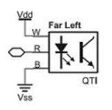

Purpose: To understand how the PIC16F684 functions by building and programming a robot that is able to follow a line.
Materials:
PIC16F684
LM293N Chip
L293D Chip
PICkit 3
Dip for PICkit 3
2 QTI Light Sensors
2 Electric motors with Gear box
3 680 Ω Resistor (Blue, Grey, Brown, Gold)
Variable Resistor
100 µF Capacitor
0.1 µF Capacitor
3 LEDs
Wires
9V Battery
6V Battery
Voltage Regulator
Build Power Supply
1. The 9V battery will be connected to a voltage regulator to decrease the voltage as the circuit requires 5V of the 9V in the battery.
a) The input pin will be attached to the positive side of the 9V battery.
b) The ground pin will go to ground.
c) The output pin will go to Vcc.
d) A 0.1 uF and 100uF capacitor will be connected to and from the ground and output pin
2. The 6V battery can be replicated using four 1.5V batteries and will be connected on the bottom part of the breadboard
3. Set up a power LED by connecting a 680Ω from Vcc tothe positive leg of an LED. Place the negative leg of the LED in ground.
Inserting the Chips
4. Place the chips (PIC16F684, LM293N, L293D) an appropriate distance apart on the breadboard, make sure you also have an idea of where you will place your motors, dip, variable resistors and sensors so your breadboard is organized.
Powering the Circuit
5. Sensors:
a) Connect the B pin to ground
b) Connect the W pin to Vcc
6. L2D3D Chip:
a) Connect pin 13 and 5 to ground
b) Connect pin 8, 9 and 16 to Vcc
c) Connect a wire from pin 16 to pin 1
d) Connect a wire from pin 4 to 5
e) Connect a wire from pin 13 and 12
7. LM293 Chip:
a) Connect pin 4 to to ground
b) Connect pin 8 to Vcc
8. PIC16F684:
a) Connect pin 14 to ground
b) Connect pin 1 to Vcc
9. PICkit3 (dip):
a) Connect pin 2 to Vcc
b) Connect pin 3 to ground
10. Connections between the L293D chip and the PIC:
a) Connect pin 2 on the L293D chip to pin 8 on the PIC
b) Connect pin 7 on the L293D chip to pin 7 on the PIC
c) Connect pin 15 on the L293D chip to pin 9 on the PIC
d) Connect pin 10 on the L293D chip to pin 10 on the PIC
11. Connections between the L293D chip and the PIC:
a) Connect pin 3 on the L293D chip to the left side of the left motor
b) Connect pin 6 on the L293D chip to the right side of the left motor
c) Connect pin 14 on the L293D chip to the right side of the right motor
d) Connect pin 11 on the L293D chip to the left side of the right motor
Sensor Circuit
12. Connect pin 2 on the PIC to pin 7 on the LM293 chip
13. Connect pin 3 on the PIC to pin 1 on the LM293 chip
14. Connect pin 3 and pin 5 on the LM293 chip to the input pin on the variable resistor
15. Connect pin 2 on the LM293 chip to the R pin on the right sensor
16. Connect pin 6 on the LM293 chip to the R pin on the left sensor
17. Connect a 680 Ω resistor from pin 1 on the LM293 chip to the negative leg of the LED. The positive leg will be placed in Vcc.
18. Connect a 680 Ω resistor from pin 7 on the LM293 chip to the negative leg of the LED. The positive leg will be placed in Vcc.
Programming the Circuit
19. Connect pin 1 on the dip for PICkit3 to pin 4 on the PIC
20. Connect pin 4 on the dip for PICkit3 to pin 13 on the PIC
21. Connect pin 5 on the dip for PICkit3 to pin 12 on the PIC
1. The 9V battery will be connected to a voltage regulator to decrease the voltage as the circuit requires 5V of the 9V in the battery.
a) The input pin will be attached to the positive side of the 9V battery.
b) The ground pin will go to ground.
c) The output pin will go to Vcc.
d) A 0.1 uF and 100uF capacitor will be connected to and from the ground and output pin
2. The 6V battery can be replicated using four 1.5V batteries and will be connected on the bottom part of the breadboard
3. Set up a power LED by connecting a 680Ω from Vcc tothe positive leg of an LED. Place the negative leg of the LED in ground.
Inserting the Chips
4. Place the chips (PIC16F684, LM293N, L293D) an appropriate distance apart on the breadboard, make sure you also have an idea of where you will place your motors, dip, variable resistors and sensors so your breadboard is organized.
Powering the Circuit
5. Sensors:
a) Connect the B pin to ground
b) Connect the W pin to Vcc
6. L2D3D Chip:
a) Connect pin 13 and 5 to ground
b) Connect pin 8, 9 and 16 to Vcc
c) Connect a wire from pin 16 to pin 1
d) Connect a wire from pin 4 to 5
e) Connect a wire from pin 13 and 12
7. LM293 Chip:
a) Connect pin 4 to to ground
b) Connect pin 8 to Vcc
8. PIC16F684:
a) Connect pin 14 to ground
b) Connect pin 1 to Vcc
9. PICkit3 (dip):
a) Connect pin 2 to Vcc
b) Connect pin 3 to ground
10. Connections between the L293D chip and the PIC:
a) Connect pin 2 on the L293D chip to pin 8 on the PIC
b) Connect pin 7 on the L293D chip to pin 7 on the PIC
c) Connect pin 15 on the L293D chip to pin 9 on the PIC
d) Connect pin 10 on the L293D chip to pin 10 on the PIC
11. Connections between the L293D chip and the PIC:
a) Connect pin 3 on the L293D chip to the left side of the left motor
b) Connect pin 6 on the L293D chip to the right side of the left motor
c) Connect pin 14 on the L293D chip to the right side of the right motor
d) Connect pin 11 on the L293D chip to the left side of the right motor
Sensor Circuit
12. Connect pin 2 on the PIC to pin 7 on the LM293 chip
13. Connect pin 3 on the PIC to pin 1 on the LM293 chip
14. Connect pin 3 and pin 5 on the LM293 chip to the input pin on the variable resistor
15. Connect pin 2 on the LM293 chip to the R pin on the right sensor
16. Connect pin 6 on the LM293 chip to the R pin on the left sensor
17. Connect a 680 Ω resistor from pin 1 on the LM293 chip to the negative leg of the LED. The positive leg will be placed in Vcc.
18. Connect a 680 Ω resistor from pin 7 on the LM293 chip to the negative leg of the LED. The positive leg will be placed in Vcc.
Programming the Circuit
19. Connect pin 1 on the dip for PICkit3 to pin 4 on the PIC
20. Connect pin 4 on the dip for PICkit3 to pin 13 on the PIC
21. Connect pin 5 on the dip for PICkit3 to pin 12 on the PIC

Pinout for the PICKkit3.

Pinout for the PIC16F684

Pinout for QTI Sensor